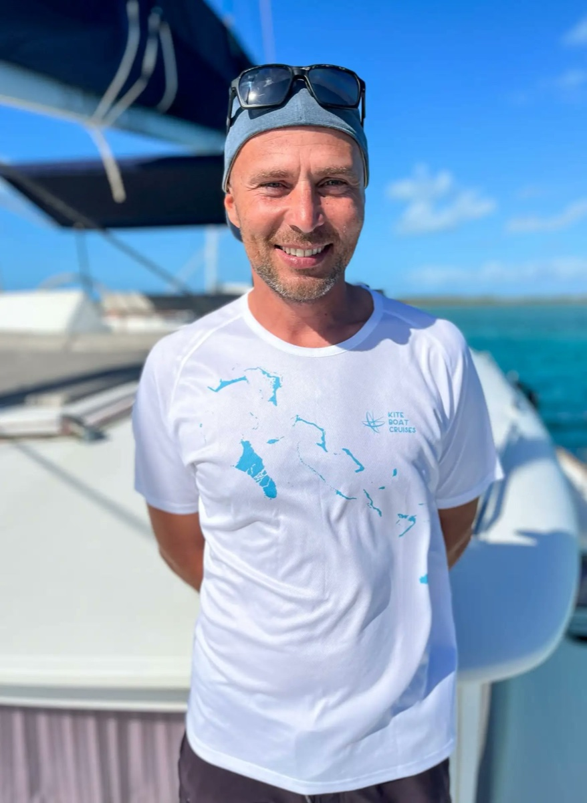

Fotografie



Fotografo dal 2009. La fotografia è stata il motivo per partire e, per anni, il mio modo di viaggiare: Asia, Oceania, Africa e Sud America, con lo zaino in spalla, in van, in moto e in barca, spinto dalla curiosità per le persone e le culture che incontravo.
Lungo la strada è arrivato il video. Una foto ferma un istante; il video ne restituisce il contesto: i gesti, i suoni, il ritmo di un luogo.
Poi il mare, che non ho più lasciato. Ho lavorato come istruttore di kitesurf in Grecia e alle Bahamas, a bordo delle barche charter, e anche come guida subacquea e marinaio. Conosco questi ambienti dall'interno, dalla parte di chi ci lavora ogni giorno.
Oggi metto questa esperienza al servizio di chi opera nel viaggio, nell'outdoor e nel mare: tour operator e organizzatori di esperienze, charter e scuole di sport, strutture ricettive, camper e van, marchi di attrezzatura da viaggio. Il mio lavoro è capire cosa rende unico ciò che fai e trasformarlo in immagini che lo facciano sentire.
GIVI Magazine · 2017
Reportage di 12 pagine tra Marche, Toscana e Umbria: testo e foto miei.
Sott'acqua, col drone, in barca e in montagna.Divemaster PADI · Istruttore IKO · Patente nautica professionale
Spot, video per il sito e racconti di quello che fai.
Persone, luoghi e prodotti, per il sito e i social.
Reel, foto e storie pronti da pubblicare, anche per tutta la stagione.
A chi parlare, cosa dire e su quali canali. Un piano semplice e chiaro.
Il messaggio arriva direttamente a me.